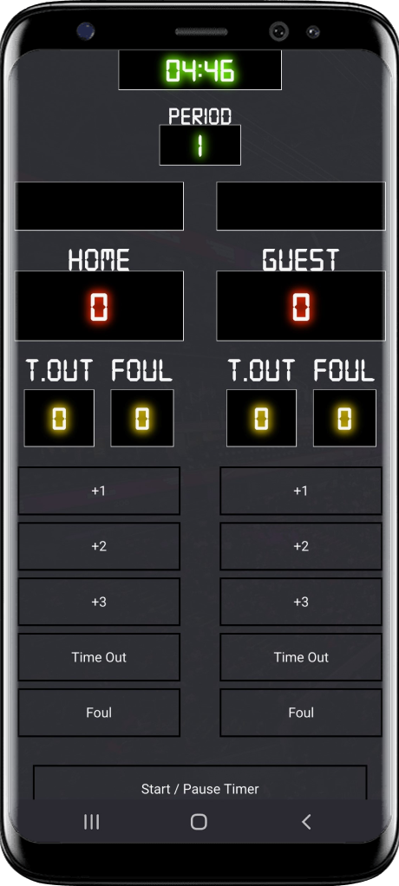

Project Overview
The basketball scoreboard app is a web-based application designed for use during basketball games to keep track of scores, fouls, timeouts, and time remaining. The application is intended for use by referees, coaches, and players who need to keep track of the game details accurately and efficiently.
The scoreboard consists of two main components: the scorekeeper section and the timer section. The scorekeeper section displays the current score of the game, with separate displays for each team, as well as the number of fouls and timeouts for each team. The timer section displays the remaining time in the game, including options for setting the length of the game, stopping and starting the timer, and playing a final buzzer when the time runs out.
In addition, the scoreboard includes several features, including:
- Controls for incrementing and decrementing the score, fouls, and timeouts for each team
- An indicator to show which team is currently leading
- A display for which period the game is in
- A button to start a new game
Project Details
The basketball scoreboard app is built using HTML, CSS, and JavaScript. The app is designed to be user-friendly and easy to use, with a clean interface that makes it easy to read and operate. The application is fully responsive, meaning it can be used on a wide variety of devices, including desktops, laptops, tablets, and smartphones.
Development Process
The design was created in HTML and CSS, with a focus on simplicity and ease of use. The application was then built and tested in JavaScript, with a focus on accuracy and reliability.
Features and Functionality
The basketball scoreboard app includes several key features and functionality, including:
- Timer with configurable length and buzzer sound
- Start, stop, and reset controls for the timer
- Separate displays for each team's score, fouls, and timeouts
- Controls for incrementing and decrementing the score, fouls, and timeouts for each team
- An indicator to show which team is currently leading
- A display for which period the game is in
- A button to start a new game
